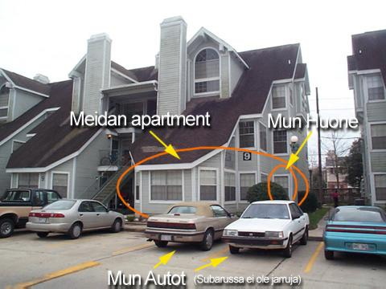
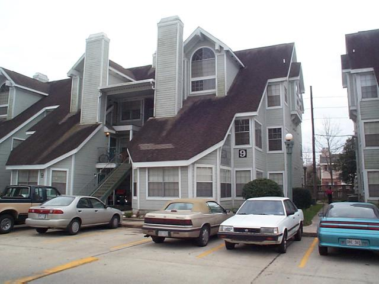
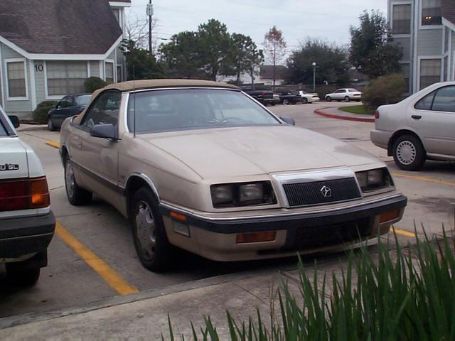
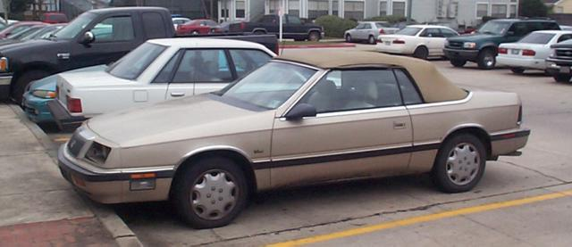
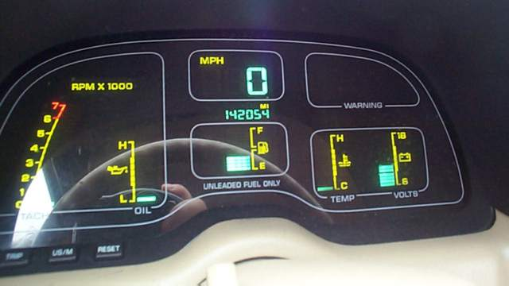

Tassa naita kuvatuksia nyt olis.
Melkein unohdin koko jutun, mutta muistin taas aamulla kun herasin.
Pistin digitaali kameran taskuun ja kavin rapsimassa parit kuvat.
Tassa ensimmaisessa kuvassa on selvitettyna .....noh
nakyyhan ne.

Sitten vahan isompi / selkeempi kuva samasta aiheesta

Sitte mun melkein uus auto. Kylla silla korottelee mukavammin kuin
jarruttomalla
Suparulla (valkonen tossa vieressa, ylakuva) Automaatti vaihteistosta
ma en tykkaa,
vaikka se nyt on suht mukava. Mutta manuaali on paljon parempi ja
taloudellisempi.
Ainiin, Leffassa "There's Something About Mary" on ihan samanlainen
auto.
Muistaakseni teilla on se leffa.

Seuraavana sama hoppa sivulta

Ja viela nappara digitaali mittaristo

Etta siihen malliin.
P